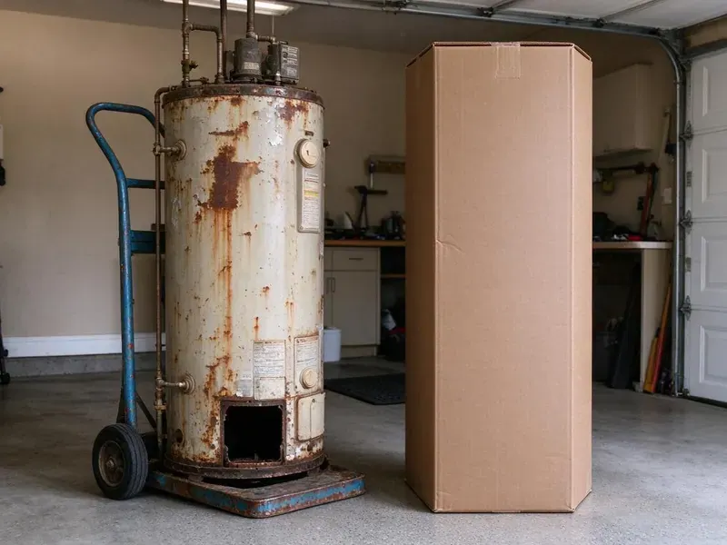

Plumbing Replacement in Racine, WI
At HKV Plumbing, we provide professional plumbing replacement across Racine, WI, handling everything from water heaters to main sewer lines with precision and care.
- Same-Day Water Heater Replacements
- Guaranteed Work
- Licensed & Insured
- Prompt, Expert Technicians
Need Plumbing Replaced? Call Our Experts in Racine, WI.
Get peace of mind with new, efficient plumbing installed by HKV Plumbing.
Plumbing Replacement in Racine, WI for Equipment, Pipes and Sewer Lines
HKV Plumbing replaces plumbing systems and equipment that have reached the end of their service life. We assess age, condition and repair history, then give you an honest recommendation on whether replacement makes more sense than another repair. Every replacement is installed to current code and tested before we leave.
Our expertise includes:
- Well pump and pressure tank upgrades
- Water heater and tankless unit replacements
- Advanced Pipe Replacement Techniques

Additional Plumbing Replacement Services in Racine, WI
When repairs are no longer enough, our replacement services in Racine, WI deliver modern, efficient equipment installed right.


Customers
Why Choose HKV Plumbing for Plumbing Replacement in Racine, WI?
Our experience with the plumbing demands of Racine, WI properties means every replacement project is handled with local code compliance and climate considerations in mind.
- Honest Advice, We tell you when a repair makes more sense than replacement.
- Local Knowledge, We know Racine's plumbing codes and common issues, ensuring compliant and effective replacements.
- Certified Plumbers, Our technicians are licensed, insured and continuously trained on current plumbing technologies and safety protocols.
Citywide Coverage
We extend our expert plumbing replacement services to all areas within Racine, so no matter your location, you have access to reliable and professional plumbing solutions from HKV Plumbing.
Experienced Team
Our team of plumbers brings broad experience to every plumbing replacement project in Racine. They are well trained in diagnosing complex issues and completing precise replacements, from detailed pipe work to major appliance installations.
Safety-First Approach
Safety and code compliance are top priorities on every plumbing replacement project we take on in Racine. We follow all local and state plumbing codes, securing necessary permits and conducting thorough inspections.
Trusted Certified Racine Plumbing Services Professionals
At HKV Plumbing, we take pride in providing certified plumbing services throughout Racine, WI. Backed by leading industry credentials, our experienced plumbers combine technical skill with genuine customer care. Whether it is repair, installation, or maintenance, we follow strict safety and quality standards to deliver lasting results you can trust.
Call Us Now PHCC Plumbing Contractor Recognition
PHCC Plumbing Contractor Recognition Better Business Bureau (BBB) Accreditation
Better Business Bureau (BBB) Accreditation Angi Certified Pro
Angi Certified Pro ISO 9001 Quality Management Certification
ISO 9001 Quality Management CertificationReliable Plumbing Replacement Services in Racine, WI
Whole-Home Pipe Replacement in Racine
Homes with multiple pinhole leaks, galvanized pipe or polybutylene may benefit from a complete repipe. We replace supply lines with PEX or copper, often rerouting through the attic to avoid future slab leaks. Most repipes take two to four days with water restored each evening when possible. Drywall openings are patched when the work is finished.

Pipe Replacement & Whole-Home Repiping in Racine, WI
Homes in Racine, WI with older galvanized steel or polybutylene pipes often experience low water pressure, discolored water or frequent leaks. A whole-home repipe with new PEX or copper piping can greatly improve water quality and pressure and eliminate leak concerns. We carefully plan and complete repiping projects, minimizing disruption and making sure all new pipes are properly routed, insulated and connected, providing a durable and efficient plumbing system for many years.
Well Pump & Pressure Tank Replacement in Racine
For rural properties in and around Racine that rely on well water, a failing well pump or pressure tank can leave you with no water at all. We diagnose issues with your current well system and provide professional replacement for submersible or jet pumps. We also replace faulty pressure tanks, so your well system maintains consistent water pressure and your pump lasts longer. Proper sizing and installation are essential for efficient operation and a reliable water supply.
Sewer Line Replacement in Racine
Persistent sewer backups, foul odors or lush spots in your yard can signal a failing sewer line. Freeze and thaw cycles move the ground each year, which can crack older clay and cast iron sewer laterals. We offer complete sewer line replacement using trenchless technology whenever possible, minimizing disruption to your landscaping. For more severe damage, traditional excavation is performed with careful attention. We make sure new lines are properly graded, connected and compliant with local Racine plumbing codes, preventing future blockages and costly repairs.
Gas Line Replacement in Racine
Old or damaged gas lines pose a serious safety risk and need immediate attention. If you suspect a gas leak or your gas lines show signs of corrosion or age, our certified plumbers in Racine can perform safe and code-compliant gas line replacement. We use approved materials like black steel pipe or corrugated stainless steel tubing (CSST) for secure installations, making sure all connections are leak-tested and meet strict safety regulations for your home's protection.
Tankless Water Heater Replacement in Racine, WI
Switch to endless hot water with a tankless water heater replacement. These units heat water on demand, saving energy and space, which is a great benefit for Racine homes. We specialize in replacing older tankless units or converting from traditional tank heaters to high-efficiency tankless models from brands like Rinnai and Noritz. Our service includes assessing your home's gas line capacity or electrical service, ensuring proper venting and precise installation to maximize efficiency and longevity.
Well Pressure Tank Replacement in Racine
If your well pump is cycling too often or you have inconsistent water pressure, your pressure tank might need replacing. HKV Plumbing installs new well pressure tanks, so your well system operates efficiently and your well pump lasts longer. We correctly size the tank to your system in Racine, optimizing water delivery and energy usage.

Sump Pump and Well Pump Replacement in Racine, WI
For homes with basements or relying on well water, a working pump is critical. HKV Plumbing replaces faulty sump pumps and well pumps with high-quality, dependable models. We make sure of correct sizing and installation for effective water removal and consistent water pressure, protecting your Racine home from flooding and keeping a steady water supply. We work with brands like Zoeller and Grundfos.
Plumbing Replacement Services Near Me in Racine, WI
When you need dependable plumbing replacement services near me in Racine, WI, HKV Plumbing is your local expert. We know the local plumbing infrastructure and its challenges closely, which lets us provide effective and tailored solutions.
If you are searching for plumbing replacement near me because your water heater just failed or your sewer line keeps backing up, call our local team. We respond quickly and can often replace water heaters the same day. Larger projects are scheduled promptly with a firm timeline.
HKV Plumbing at a Glance
- Licensed and insured plumbers serving Racine, WI
- Same-day appointments and 24/7 emergency response
- Clear written estimates, no hidden fees
- 4.8-star rated by 448+ Wisconsin customers
Racine Map
Racine Information
- Population
- 76,602
- Area codes
- 262/414/920
- Service area
- Racine and communities within 40 miles
- Nearby
- Kenosha, West Allis, Milwaukee, Wauwatosa
Hard water, temperature extremes and shifting soil can shorten the life of water heaters, pipes and sewer lines, making well-timed replacement a smart way to avoid costly water damage.
Expert Services
Trust our professionals for reliable HKV Plumbing solutions in Racine, WI.
Our Specialized Plumbing Services in Racine, WI
At HKV Plumbing, we provide a complete range of plumbing services across Racine, WI. From leak detection to full system installations, our team ensures fast, precise, and affordable service for both residential and commercial properties. Explore our core services below:


How Our Plumbing Replacement Process Works in Racine, WI
From initial assessment to final inspection, HKV Plumbing provides a smooth and professional plumbing replacement experience.
Request a Quote
Contact us at (414) 432-4641 to discuss your plumbing replacement needs. We will schedule a good time for a professional assessment at your Racine property.
On-Site Evaluation
Our expert plumber will visit your home to inspect your current plumbing, diagnose issues and recommend the best replacement solutions. We provide a detailed, upfront estimate.
Professional Installation
Once approved, our skilled technicians will remove old plumbing and install new components. We work efficiently, follow all codes and keep disruption to your home to a minimum.
Frequently Asked Questions About Plumbing Replacement in Racine
The cost of plumbing replacement in Racine, WI varies widely based on the type of service. A water heater replacement can range from $1,200 to $3,500, while a sewer line replacement might be $3,000 to $15,000 or more. Whole-home repiping can cost between $4,000 and $15,000. We provide detailed, clear estimates after an on-site assessment.
Replacing old pipes with PEX or copper offers many benefits. PEX is flexible, corrosion-resistant and less prone to bursting in freezes, while copper is durable and long-lasting. Both improve water quality, eliminate leaks from old pipes and can noticeably boost water pressure and flow throughout your Racine home.
Key signs include frequent, recurring leaks in the same area, discolored water, very low water pressure throughout the house, heavy corrosion visible on pipes or a major component like a water heater being over 10 to 15 years old and failing. If repair costs approach the cost of replacement, replacement is often the better long-term investment.
The timeline for plumbing replacement depends on the complexity of the job. A water heater replacement usually takes 2 to 4 hours. A main water line or sewer line replacement can take 1 to 3 days. Whole-home repiping projects typically span 3 to 7 days, depending on the size of the house and accessibility.
While some minor plumbing repairs can be DIY, major replacements like water heaters, sewer lines or repiping should always be handled by licensed professionals. These jobs involve complex systems, potential safety hazards (gas, high water pressure) and strict code compliance. Improper installation can lead to leaks, damage and even severe safety risks, costing more in the long run.
The timeline depends on the complexity of the job. A water heater replacement usually takes 2 to 4 hours. A major project like a full house repipe or sewer line replacement can take 1 to 5 days. We will provide an estimated schedule during your consultation.
Yes, for critical issues like burst pipes or non-functional water heaters, HKV Plumbing offers emergency plumbing replacement. We understand that some plumbing failures cannot wait, and we put first urgent situations to restore safety and function to your Racine home.
Consider the age of the equipment, the cost of repair compared with replacement and how often it has needed service. We give you both options with pricing so you can decide.
What People Are Saying About Our Plumbing Experts?

Laura S.
I scheduled a water heater replacement, and the team made the process smooth and affordable. The new unit works perfectly, and they cleaned up after completing the job.
Water Heater Replacement · Racine, WI
Mark T.
When our office needed drain cleaning, HKV Plumbing provided quick, reliable service. The plumber arrived on time and made sure every drain flowed perfectly before leaving. Very satisfied.
Drain Cleaning · West Allis, WI
Robert G.
The trenchless sewer replacement saved our front yard. They walked us through the camera inspection footage first so we knew exactly what we were paying for.
Sewer Line Replacement · West Allis, WIJames P.
Our commercial plumbing system had a leak under the sink, and HKV Plumbing handled it professionally. The plumbers arrived quickly and restored everything without disruption to our customers.
Commercial Plumbing · Kenosha, WI
Daniel K.
A pipe burst at 11 pm and they actually answered. The plumber showed up within the hour, shut everything down, and had us back to normal the next morning. Could not ask for more.
Emergency Plumbing · Janesville, WI
Emily R.
I called HKV Plumbing for plumbing repair, and the technician was fast, polite, and thorough. They explained the problem clearly and fixed it the same day. I will definitely hire them again. Highly recommended!
Plumbing Repair · Wauwatosa, WI